CONSTANCIA DE TRANSFERENCIA Y MODELAJE DE INNOVACIÓN DOCENTE
Estimados Comité de Clasificación Docente:
Por medio de la presente, hago constar que he implementado de manera exitosa una innovación educativa en el campo de las artes gracias a la transferencia del profesor Alfredo Orozco Valenzuela (Nómina: L00973917), Profesor de Comunicación y Arte Digital de la EAAD, durante el periodo de semestre agosto-diciembre 2025.
Dicho proceso incluye la integración del modelo de creación "Cromotopo" como un artefacto artístico conceptual. Este dispositivo fue diseñado por el Maestro Orozco para fundamentar experiencias profundas y relacionales vinculando el espacio, los medios y el significado dentro de la narrativa artística.
Implementación por Unidad de Formación:
- Arte Instalación (SAT0102 Diseño de experiencia): En esta unidad, el profesor Alfredo Orozco Valenzuela fungió como coordinador y diseñador del proceso, desarrollando el "Cromotopo" como base para narrativas conceptuales. Participé en este curso bajo la modalidad de Team teaching.
- Inmersión y Experimentación Creativa (SESC0300 Representación significativa): A partir de la transferencia recibida, realicé el modelaje y la re-implementación de esta metodología en mi grupo, permitiendo a los estudiantes explorar posibilidades expresivas basadas en contenido inmersivo.
Esta colaboración permitió el desarrollo del proyecto estudiantil "Clínica del Partido Colectivo", el cual demostró resultados sobresalientes en la capacidad de los alumnos para cuestionar la percepción y la realidad a través de estímulos sensoriales complejos.
Atentamente,
Esteban De la Monja Casar.
Nómina: L03021622
Profesor de Cátedra del Departamento de Arte Digital - Región Occidente
EAAD – Escuela de Arquitectura, Arte y Diseño
Campus Guadalajara | Tecnológico de Monterrey
emonja@tec.mx | www.tec.mx
Anexo I: Manual Ejecutivo de la Experiencia
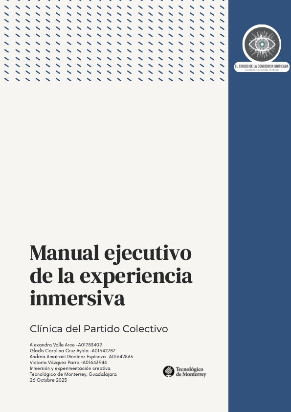Portada: Clínica del Partido Colectivo.
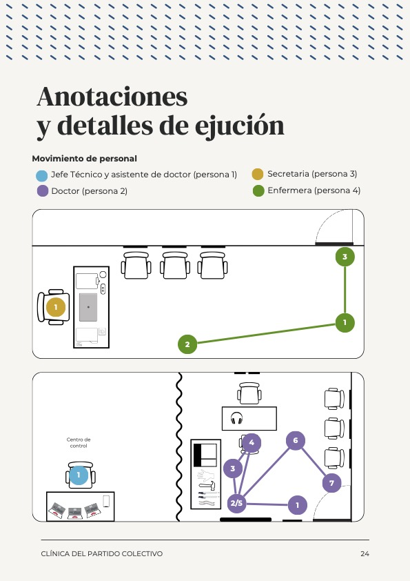Planificación de movimiento de personal.
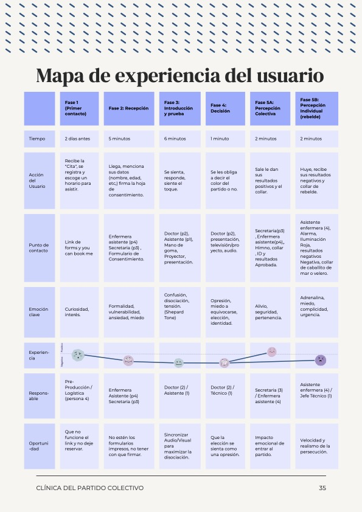Mapa de experiencia del usuario y fases de inmersión.
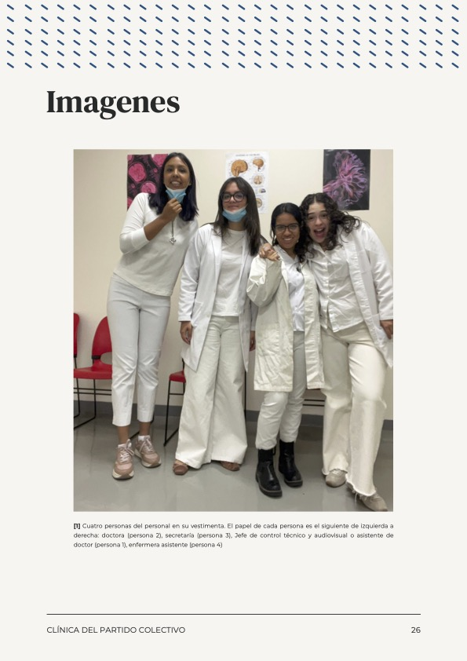Registro del personal y vestimenta técnica.
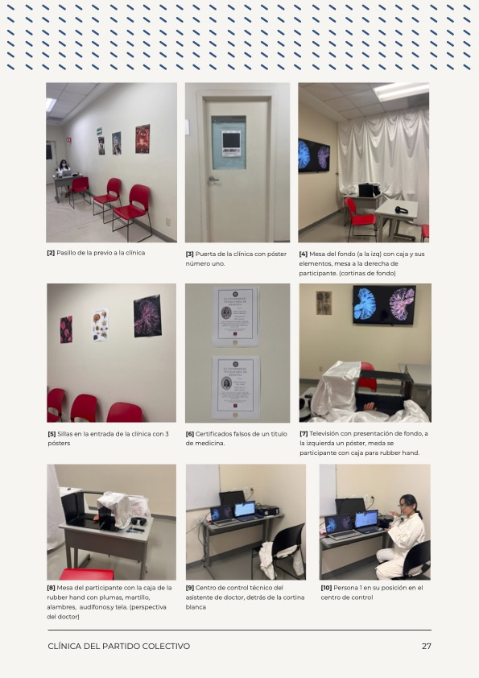Detalles de la instalación y certificados decorativos.
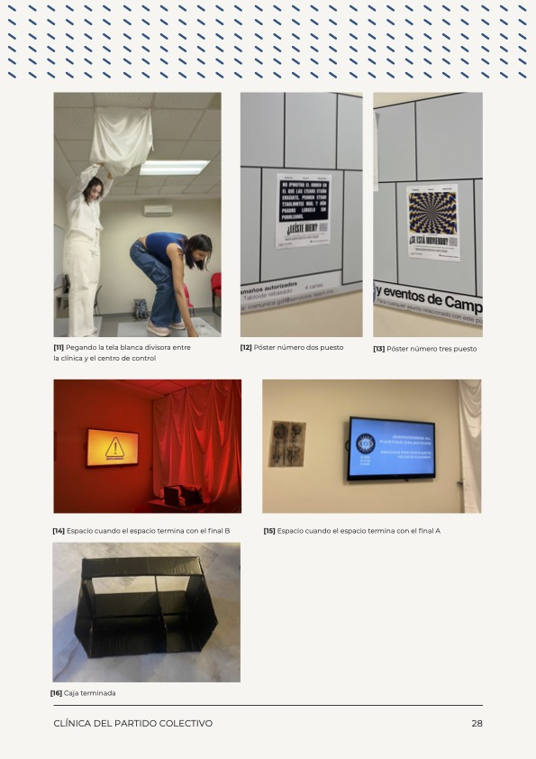Proceso de montaje y control audiovisual.
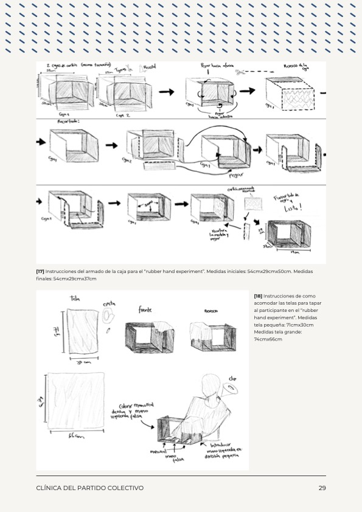Diagramas técnicos para el experimento Rubber Hand.
Anexo II: Evidencias de Aplicación Final
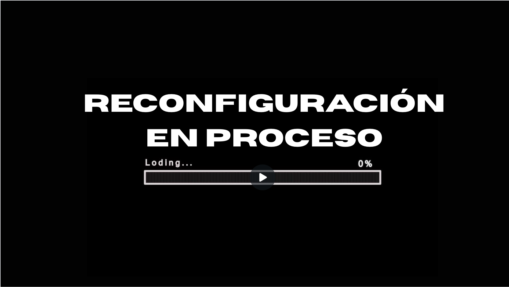Implementación del dispositivo conceptual.
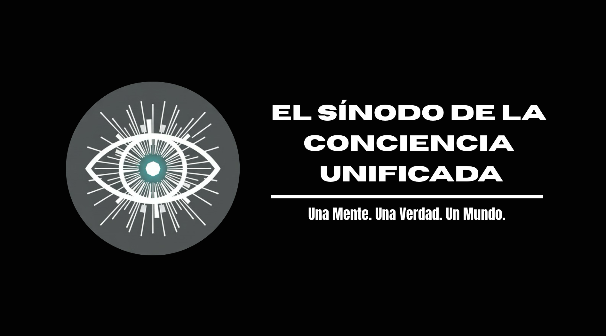Interacción sensorial directa del estudiante.
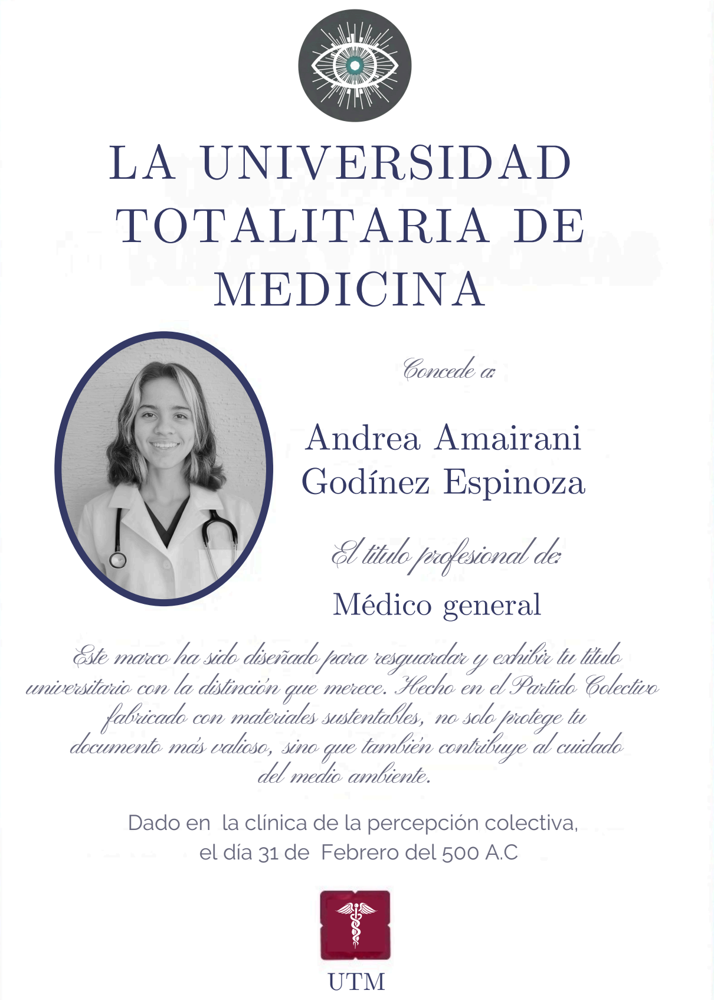Gráfica e identidad del proyecto estudiantil.
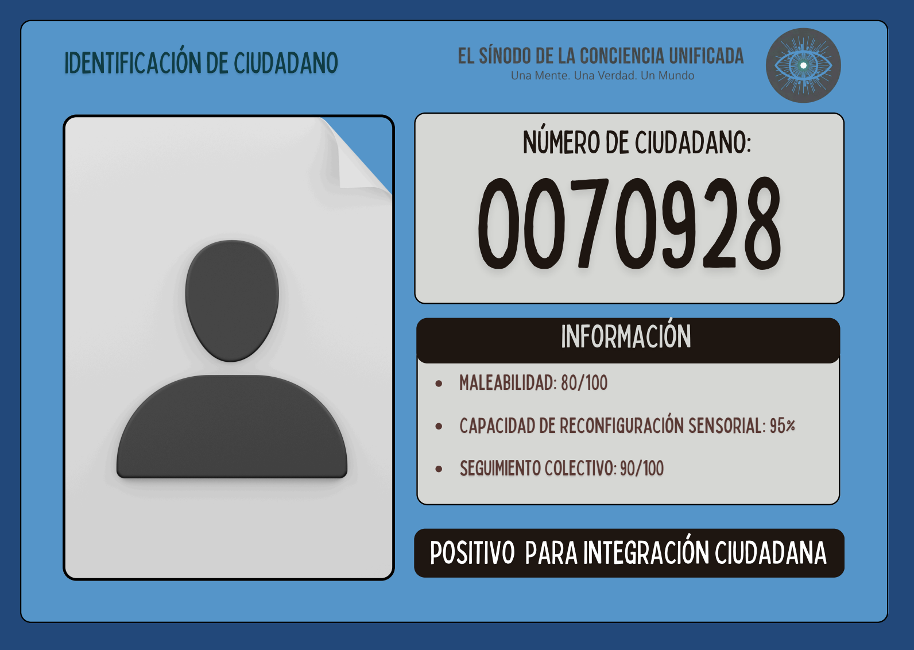Ambiente inmersivo y post-producción.
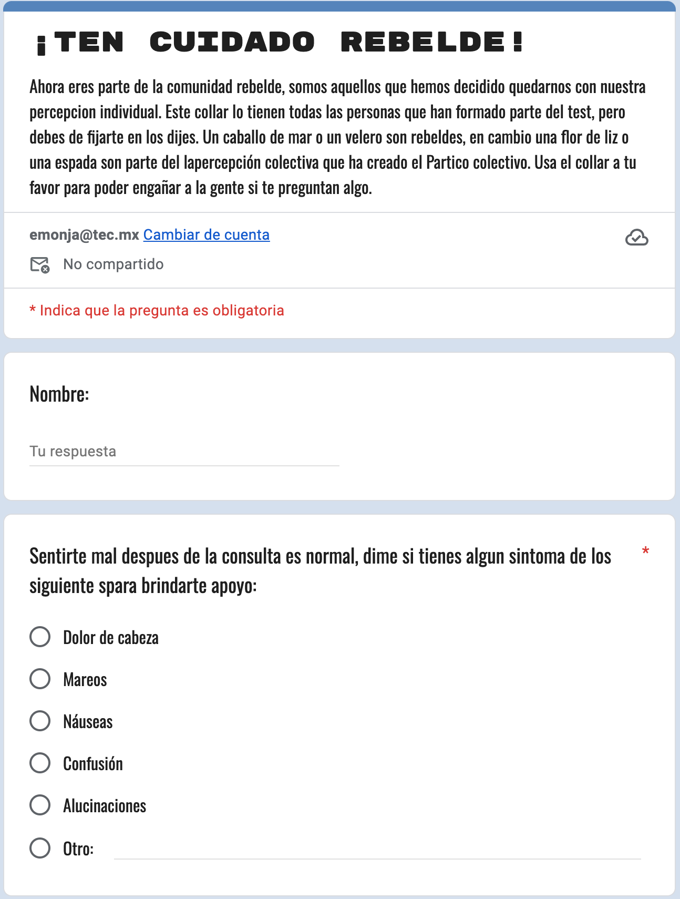Validación de resultados y credenciales de usuario.